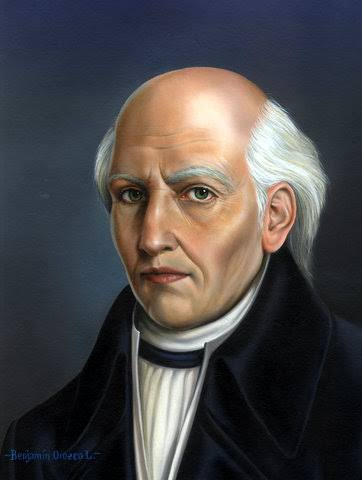
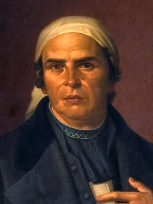
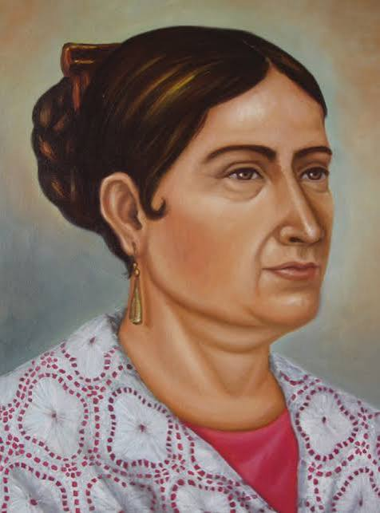
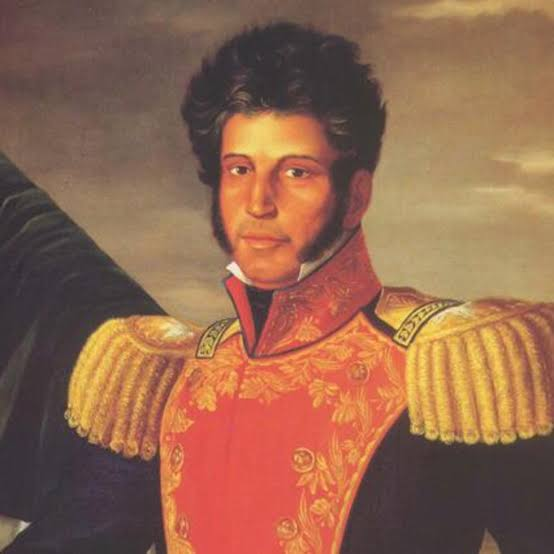

La madrugada del 16 de septiembre de 1810, el cura Miguel Hidalgo da el Grito de Dolores llamando al pueblo a levantarse contra el dominio español.
José María Morelos organiza el movimiento insurgente y expone los puntos para declarar libre a América y abolir la esclavitud.
Agustín de Iturbide y Vicente Guerrero se unen mediante el Abrazo de Acatempan y entra el Ejército Trigarante a la Ciudad de México, logrando la independencia.

Conocido como el "Padre de la Patria", inició la lucha por la independencia en 1810.

El "Siervo de la Nación", continuó la lucha y fue líder militar y político de la insurgencia.

La "Corregidora", personaje clave que avisó a los insurgentes que la conspiración había sido descubierta.

General insurgente que mantuvo la resistencia en el sur y concretó el fin de la guerra.
El Grito de Independencia realmente ocurrió durante la madrugada del 16 de septiembre. La tradición de celebrarlo la noche del 15 a las 11:00 PM se popularizó durante la época de Porfirio Díaz para hacerlo coincidir con su cumpleaños.
Existe el mito de que Miguel Hidalgo tocó la campana de Dolores para reunir a la gente. La realidad histórica indica que fue el campanero de la iglesia, José Galván, quien la hizo sonar.